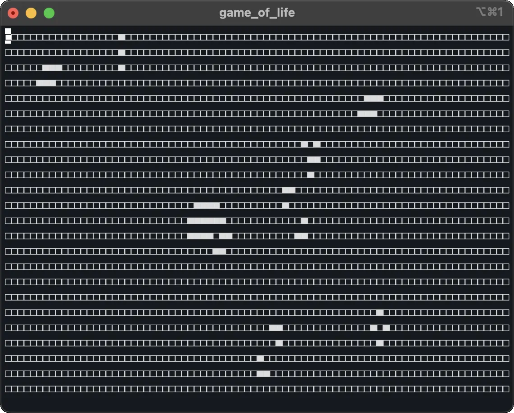
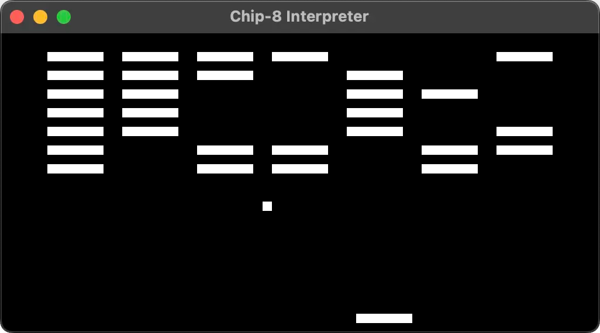
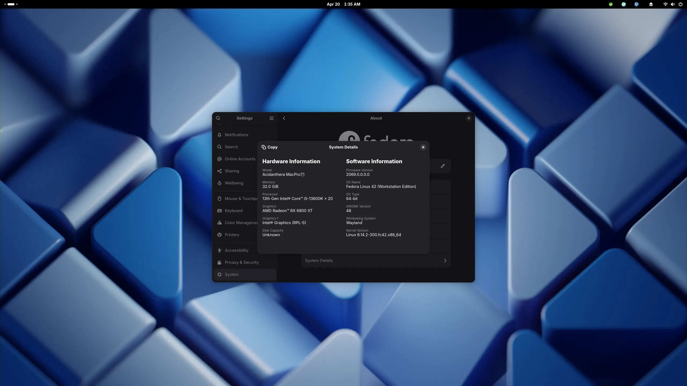
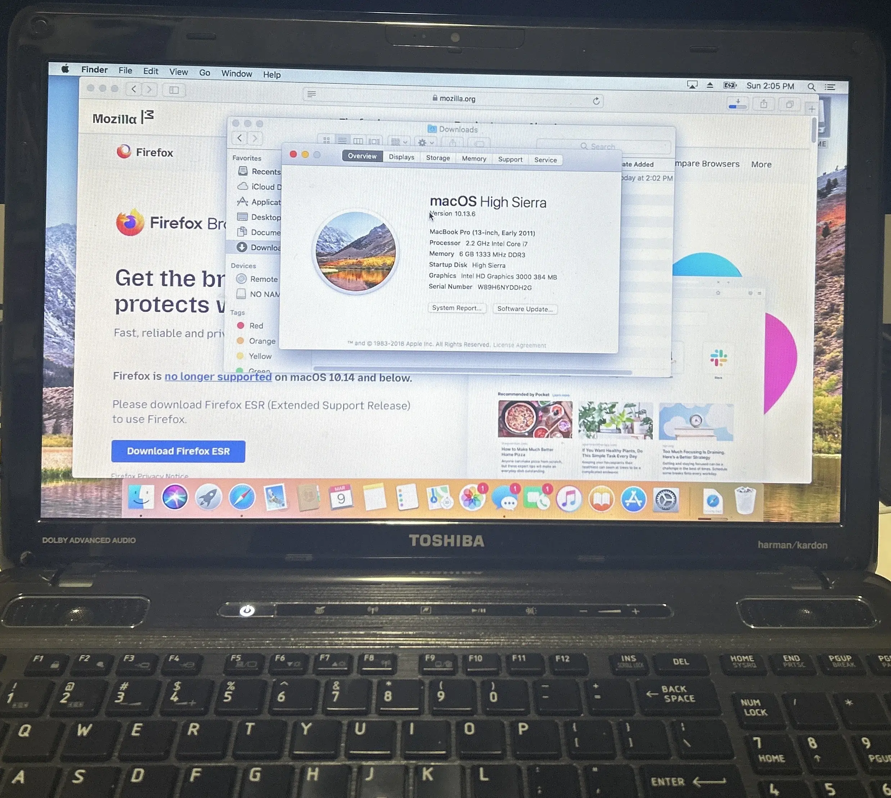
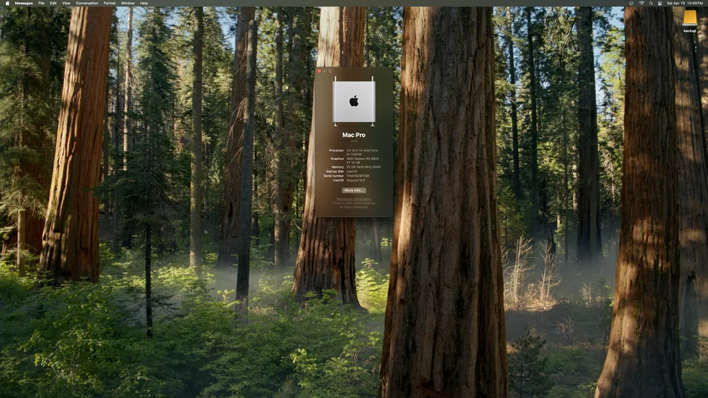

About Me
Hi, I'm Matheus, a software engineer. I primarily work with Rust and React/JavaScript, and use and contribute to free and open-source software.
Contact
- Email: contact@mathlp.com
- Signal: @matheus.80
- GitHub: @vogelbirb
Projects & Experiments
-

-
A Chip-8 Interpreter
What's Chip-8?
"Chip-8 is a simple, interpreted, programming language which was first used on some do-it-yourself computer systems in the late 1970s and early 1980s. These computers typically were designed to use a television as a display, had between 1 and 4K of RAM, and used a 16-key hexadecimal keypad for input. The interpreter took up only 512 bytes of memory, and programs, which were entered into the computer in hexadecimal, were even smaller." - Cowgod's Chip-8 Technical Reference.

> Br8kout by SharpenedSpoon running on the emulator. - User Managment System
- A simple CLI tool for managing a database of users.
-
PC Building

> I purchased the components and built my PC. I recommend you do to, it's so much cheaper than buying a prebuilt and also isn't too hard. You'll learn a lot too! -
Hackintosing

> I got OS X High Sierra running on a Toshiba P755 through OpenCore 🎉. 
> I got OS X Sequoia running on my personal desktop as well.
Certificates
- Object-Oriented Data Structures in C++
- Ordered Data Structures
- Projects are better, but more to come!
Books I Recommend
-
The Rust Programming Language
- It's definitely the best read if you want to get started with Rust.
-
Rust for Rustaceans
- If you've done a good amount of work with Rust and understand the language pretty well, this is the next logical read.
-
The C Programming
Language
- K&R might be a very dated book, but it still has good information. The examples are very fun to work through, especially if you like language and compiler design.
-
Designing
Data-Intensive Applications
- I'm still reading through this one, so far it has been great